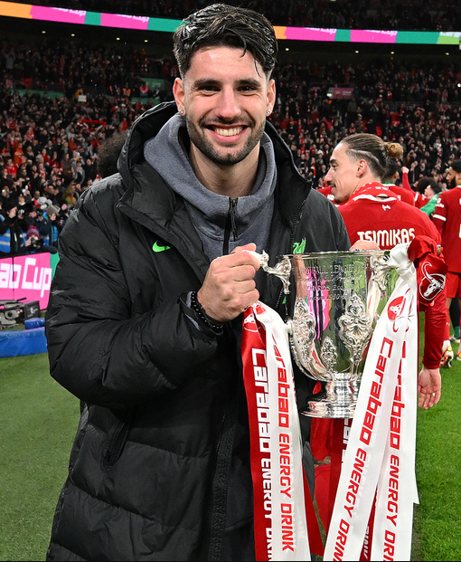

Tudnivalók
Élete
Székesfehérváron született 2000. október 25-én.
2007-ben kezdett el focizni apjával először a Videotonban, majd a fehérvári Főnix Gold FC-ben. A 2015-16-os szezont az MTK Budapest akadémiáján töltötte. Később visszatért a Főnix Goldba, az U17-es és az U19-es csapatba a 2016-17-es szezonban. 2016 júliusában hároméves szerződést kötött a Salzburggal, 2017 márciusában csatlakozott az U18-as korosztályhoz. Ebben az évben a The Guardian a világ legtehetségesebb 17 éves játékosai közé sorolta.
Június 13-án az FC Liefering bejelentette, hogy Szoboszlai náluk folytatja pályafutását. Az Erste Ligában, azaz a másodosztályban 2017. július 21-én debütált a Kapfenberger SV ellen. Itt kapott lehetőséget először élete első felnőtt bajnokiján és gólpasszt adott a 2-1-re nyert találkozón. Augusztus 4-én a BW Linz elleni bajnokin szerezte meg első gólját felnőttek között. Augusztus 20-án bokasérülést szerzett egyik edzésén, ezért majdnem egy hónapos kihagyásra kényszerült. 2018 januárjában a Red Bull Salzburgnál kezdhette meg a téli felkészülést. Január 18-án 2021-ig szóló szerződést írt alá. A csapat megnyerte a 2017-2018-as osztrák bajnokságot és Szoboszlai aranyérmet vehetett át. 2019 márciusában a goal.com portál az 50 legtehetségesebb csodagyerek 21. helyére sorolta. Március 20-án a Salzburg bejelentette, hogy 2022. május 31-ig megghosszabbította szerződését. Teljesítményének hála több neves európai élklub figyelmét is felkeltette, ilyen például az Arsenal, az Atlanta, a Juventus és az Internazionale. A klub szurkolói márciusban a hónap játékosának választották. A 2019-2020-as Bajnokok Ligája-szezon első csoportmérkőzésén, szeptember 17-én, kezdőként lépett pályára a belga Genk ellen. A 6-2-re megnyert találkozón ő lőtte csapata ötödik gólját, ezzel ő lett a legfiatalabb magyar játékos, aki pályára lépett, és aki gólt szerzett a legrangosabb kupasorozatban. A Salzburg a csoport harmadik helyén végzett és az Európa-ligában folytathatta szereplését. Szoboszlai öt csoportmérkőzésen lépett pályára, egy gólt szerzett és egy gólpasszt adott. 2020 januárjában az olasz Lazio érdeklődött a szerződtetése felől, de Szoboszlai végül nem igazolt át.
2020 januárjában az Európai Labdarúgó-szövetség (UEFA) a világ ötven legtehetségesebb labdarúgója közé sorolta. Októberben bekerült a Golden Boy díj legjobb húsz labdarúgója közé, a 8. helyre. 2020. december 17-én igazolt át az RB Leipzigbe. 2025 nyaráig írt alá szerződést. A lipcsei csapat 20 millió eurót fizetett érte Salzburgnak, ezzel ő lett a legdrágább magyar labdarúgó a sportág történetében. A szeméremcsontjában keletkezett gyulladás miatt egy időre visszatért Salzburgba gyógyulni.Később a Leipzig 2026 nyaráig meghosszabbította a szerződést.
2023. július 2-án átigazolt a Liverpoolba, ahol 2028-ig tartó szerződést írt alá. A csapat 70 millió euróért igazolta le, ezzel a Liverpool történetének harmadik legdrágább játékosa lett, és továbbra is a legdrágább magyar játékos maradt.

Sikerei, díjai
Klubbcsapatokban:
Osztrák RB Salzburg:
- Osztrák bajnok (4): 2017–18, 2018–19, 2019–20, 2020–21
- Osztrák kupagyőztes (3): 2018–19,[196] 2019–20, 2020–21
- Német kupagyőztes (2): 2021–22, 2022–23
- Angol ligakupa: 2023–24
Egyéni:
- Ersten Liga – A szezon álomcsapatának tagja: 2017–18
- goal.com – A Legtehetségesebb 50 csodagyerek 21. helyezettje: 2019
- Az év legjobb magyar utánpótláskorú labdarúgója az nb1.hu Magyar Aranylabda-szavazásán (2019)
- Bundesliga – A szezon legjobb játékosa: 2019–20
- Golden Boy-díj – A legjobb 21 éven aluli futballista 8. helyezettje: 2020
- Az év férfi sportolója (2020 és 2023)
- Magyar Aranylabda (2020, 2022, 2023)
- A hónap újonca a Bundesligában: 2021 augusztus, 2021 október, 2022 április
- Az év magyar labdarúgója (2022, 2023)
- A 2022–2023-as szezon legjobb külföldön játszó játékosa a HLSZ (Hivatásos Labdarúgók Szervezete) szavazásán: 2023
